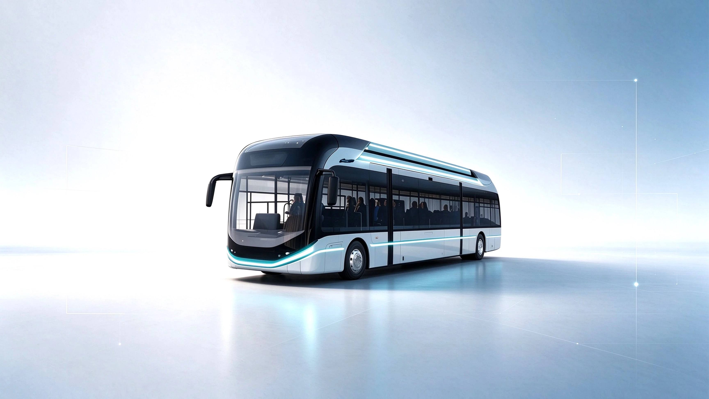
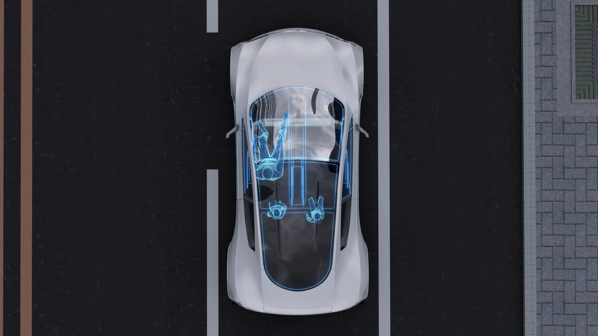
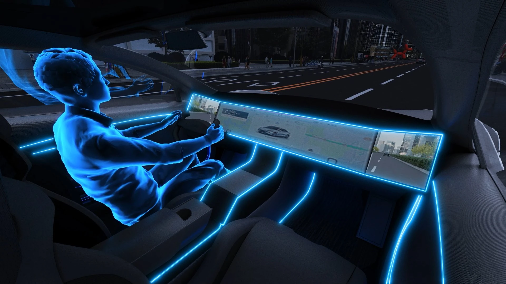

VT-Cockpit® 系列 · CMS
摄像头监控系统
利用外置摄像头及座舱内显示屏替代传统外后视镜。
Solutions & Products
VT-Cockpit® 系列智能座舱解决方案集成光学、成像、显示及视觉感知技术，以支持视觉安全、车内监控及人车交互。该系列主要包括摄像头监控系统（CMS）、舱内监控系统（IMS，包括 DMS 与 OMS）以及智能照明（SL）解决方案及产品。
PRODUCT LINES

利用外置摄像头及座舱内显示屏替代传统外后视镜。

监测驾驶员及乘员的舱内行为及状况。

在座舱内提供功能性照明及视觉交互。
PRODUCT ROADMAP
VT-Cockpit® 系列已沿着四代路线图发展，功能范围及系统复杂性逐步扩大，总结如下：
| VT-Cockpit® 1.0 | VT-Cockpit® 2.0 | VT-Cockpit® 3.0 | VT-Cockpit® 4.0 | |
|---|---|---|---|---|
| 首要重点 | 数字可见性及驾驶员识别 | 图像增强及驾驶员状态监测 | 主动预警及乘客感知 | 更多元化的整车厂定制 |
| 状态 | 量产 | 量产 | 量产 | 定点前的客户评估 |
| 主要功能 | CMS
| CMS
| CMS
| CMS
|
注：VT-Cockpit® 1.0 下的智能照明解决方案及产品原由上海宇宙于收购前开发。收购后，我们以上海宇宙的现有技术为基础，通过综合研发能力开发了 VT-Cockpit® 2.0 及后续世代的智能照明解决方案及产品。